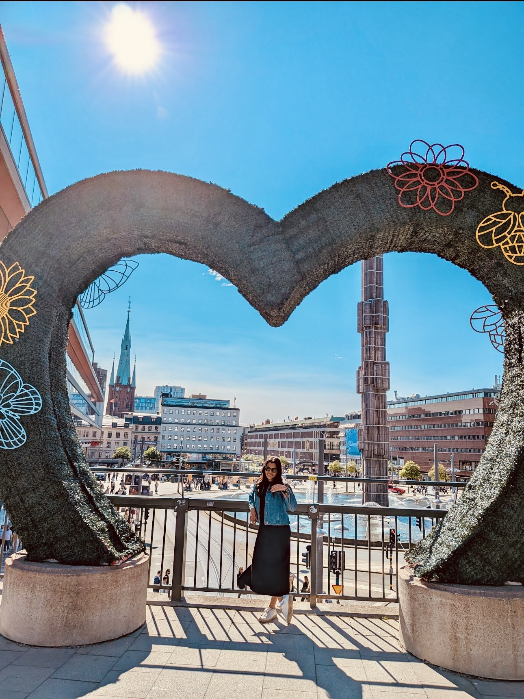

Building compliance as a growth engine —
from KYB pipelines to risk-adjusted onboarding at scale.
I build products at the intersection of growth, risk, and customer experience — leading Internal Tools, Risk and Compliance to make regulated products genuinely work for everyone.
Growth
Product-led growth, onboarding, activation, PLG motion design
Risk & Compliance
KYB, KYC, AML, fraud prevention, decisioning platforms
Platforms
Internal tooling, operational platforms, case management
Leadership
Cross-functional teams across Product, Eng, Data, Ops, Compliance
The product challenge
Most companies treat compliance as a gate. Growth teams optimise for conversion. Risk teams optimise for control. Operations absorbs the inefficiencies in between.
The question I ask is not how to choose between growth and compliance. It is how to design systems that make both possible at the same time.
"Compliance should be an asset, not a bottleneck."
Selected work
Three different dimensions of the same capability: building products that grow businesses while managing risk intelligently.
Regulated products carry a structural tax: customers must prove themselves before experiencing value. The standard response is to accept the friction and optimise around it. The better answer is to redesign the architecture entirely. I led the product vision and team to do exactly that across onboarding, KYB, KYC, and the operational layer beneath them.
The old model
Everyone through the same heavy verification queue
Value delayed until compliance is satisfied
Operations absorb the inefficiency in spreadsheets
Growth and risk permanently in tension
The new model
Progressive trust: controls calibrated to actual risk
Friction at moments of risk, not moments of curiosity
Compliance embedded in product, not process
Decisions auditable and measurable by default
What we built
Progressive profiling across the onboarding journey
Collect information only when necessary, tied to specific risk thresholds rather than a single upfront gate
An operational platform that replaced manual workflows
Moved queue management, case review, and audit trails out of spreadsheets and into a productised internal tool
Decision transparency at every layer
Every policy configurable. Every decision traceable. SLA visibility baked in from day one.
Scale
Product organisation led
19 specialists across Product, Engineering, Data, Fraud, and Operations
Platforms owned
Customer onboarding
KYB and KYC
Fraud detection
AML investigations
Operational review tooling
Strategic outcome
Reduced manual process dependency. Increased decision consistency. Positioned compliance as a competitive advantage rather than a cost centre.
Fraud and AML controls were distributed across multiple disconnected systems. The result was slow iteration, limited visibility into what was working, and an operational team spending most of their time on process rather than judgement. I led the strategy and cross-functional migration to consolidate decisioning onto a single platform.
What the platform enabled
Centralised decision engine
All fraud and AML decisions through a single, observable layer
Rule management framework
Teams could iterate on rules without engineering overhead
Experimentation capability
Shadow mode and A/B testing for rules before going live
Case management integration
Decisions surfaced directly into analyst workflows
Leadership approach
The platform thinking here mattered more than the technical choices. Fraud tools are only as good as the operating model built around them. I worked across Fraud Operations, AML, Compliance, Engineering, and Data Science to align on a shared decisioning layer.
Results
euros
Fraud identified via the new platform
961 transactions across 388 cards
Live transactions processed in production rollout
13 timeouts total
Detection rate on resolved investigations
Fraud scenarios launched
Enabled retirement path from legacy AML tooling
Account takeover attacks and card fraud were creating real customer harm and meaningful financial losses. Existing controls were reactive. I led the product strategy to shift from detection after the fact to intervention in the moment, while keeping the experience low-friction for legitimate customers.
What we shipped
Magic link protection
Suspicious login detection with a customer challenge flow and automated account protection. An emergency kill-switch for the operations team when patterns escalated.
ATO recovery flow
Self-service recovery: logout all devices, freeze all cards, notify administrators, and a fast path back to a secure account. Reduced support load significantly.
Asda fraud pattern intervention
Identified a large card-not-present attack pattern. Analysed 2,876 historic chargebacks representing 624k in fraudulent spend across 717 affected customers, then designed and shipped targeted controls.
Impact
euros prevented
ATO losses stopped
54 fraud events detected
Reduction in monthly fraud chargebacks post-intervention
Before
142 cases/mo
64,006 euros in losses
After
95% down8 cases/mo
3,378 euros in losses
How I think
These are not process rules. They are design decisions I make repeatedly, in different products, across different teams.
01
Trust is earned, not assumed
Not every user needs the same level of scrutiny. The cost of treating everyone as high-risk is paid in conversion and customer experience. Apply verification proportionally to the actual risk in front of you.
02
Friction is a design decision, not a compliance requirement
Every step you add to an onboarding or verification flow has a cost. The question is not whether friction exists but whether it is placed at the right moment for the right reason.
03
The operating model is part of the product
Compliance workflows that live in spreadsheets and email threads are not compliant. Policies need to be configurable. Decisions need to be auditable. Controls need to be measurable.
04
Automate the volume, protect the judgement
Analysts should be investigating exceptions, not processing queues. Automation is not about replacing humans. It is about reserving human expertise for the cases where it actually creates value.
05
Auditability is a product feature
Every decision should be explainable. Every control should be traceable. The audit trail is not added at the end because a regulator asked for it. It is designed in from the start.
06
Good metrics span both sides of the trade-off
Optimising for conversion at the expense of fraud losses is not success. Optimising for risk controls at the expense of activation is not either. The dashboard needs to show both at once.
What good looks like
Optimising one dimension at the expense of the others is not a win. These four groups define the full picture of a healthy platform.
Growth
Activation rate
Conversion rate
Time to first value
Risk
Fraud losses
Regulatory incidents
False positives
Operations
Straight-through rate
Analyst productivity
Review queue size
Experience
Verification completion
Customer effort score
Time to approval
About
I'm a Product Lead based in Stockholm, specialising in the intersection of growth and trust. I've spent years building and scaling fraud, AML, KYB/KYC, and onboarding platforms used by millions of customers across fintech. My edge is making compliance a competitive advantage — turning friction into conversion, and risk into a product feature.
I grew up in Chennai, and somewhere between India and Sweden I developed strong opinions about product, cold-weather hiking, and the right ratio of oat milk in a flat white. I have done Spartan races, chased the Northern Lights in Abisko, and I am convinced that fika is one of the better cultural inventions of the 20th century. I share my apartment with a dog and a cat who have very different opinions about that.
I am curious by default, collaborative by nature, and outcome-driven above everything else.
"Compliance should be an asset, not a bottleneck."
Connect on LinkedIn4+
Teams led simultaneously
19+
Specialists across disciplines
370k+
euros
Fraud losses prevented
95%
Fraud reduction on targeted attack
Based in Stockholm. Originally from Chennai.
Hiking trails, Spartan races, Northern Lights in Abisko, fika, dog and cat parent.